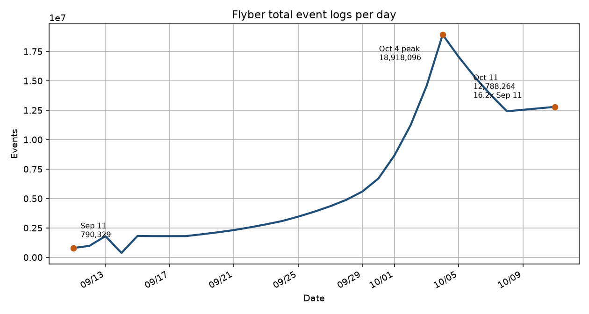
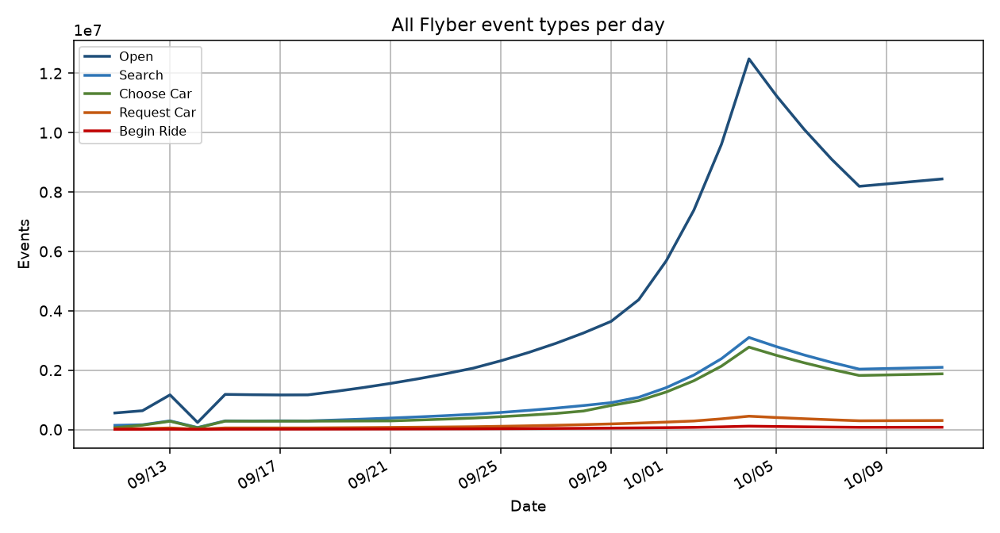
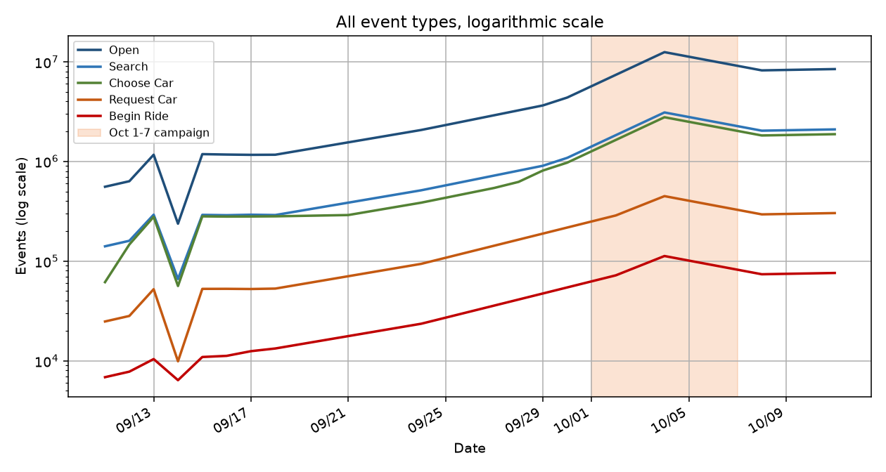

Flyber · data product coursework
Scalable data strategy
Flyber's app is live in New York, and the event pipelines cannot keep up. This proposal sizes the feed from a month of event logs, splits it into customers, events, and transactions, and recommends a cloud warehouse. It is a course project for a fictional company, not a production system I administered.
What the logs did
Engineering's month file runs from 11 September 2019 to 11 October 2019. Total events grew from 790,329 to 12,788,264, which is 16.2 times. The peak was 18,918,096 events on 4 October, during the first week of a marketing campaign. On 11 October the log was still about 1.9 times the 30 September level.

- Open, the customer action, grew 15.2 times (556,714 to 8,438,774).
- Request Car and Begin Ride together, the transactional events, grew about 12 times (31,601 to 378,980).
- Choose Car was the fastest single event type, about 30.5 times (61,416 to 1,875,536).
Shopping grew faster than completed rides. Every tap is stored, so the full event log outgrows the ride records. A one-week extract from early October is almost flat and is too small to size the pipeline.
Same shape, five event types
Open, Search, Choose Car, Request Car, and Begin Ride all climb through late September, jump in the first week of October, peak on 4 October, and ease to a higher plateau. The shared shape means the surge is demand, not one broken screen.


Separate sheets for Open and Begin Ride are in this folder: Open and Begin Ride. The same four views are in the Tableau Public workbook Flyber Event Growth.


Who needs the data
- Engineering, the primary consumer, because the app is already live and the pipelines are behind.
- Operations, for rides that actually start.
- Marketing, for the campaign's effect on browsing versus completed rides.
- Finance, for the transaction events that correspond to a ride.
The cut that answers all three growth questions is events of each event type per day. Open is customer activity. Request Car and Begin Ride are the transactions. The sum is the event log.
Three tables
- Customers, keyed by customer id. No foreign key. First and last event time live on the customer.
- Events, keyed by event id, with the user id as a foreign key. Time, event type, device, page, and neighborhood.
- Transactions, keyed by transaction id, pointing at the event and the user. Only Request Car and Begin Ride. The log has no fare amount, so none was invented.
Where it should land
A person cannot recount 12.8 million events a day, or an 18.9 million event campaign peak, in a spreadsheet. The recommendation is a cloud warehouse, Snowflake, with storage and compute separate. Raw logs land in object storage and are transformed after load into the three tables. The operational database stays in place for live booking. An on-premises warehouse would ask a startup to buy a cluster before the next campaign.